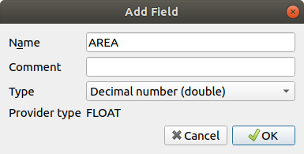
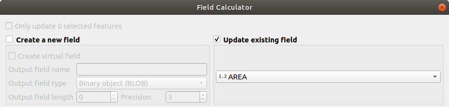
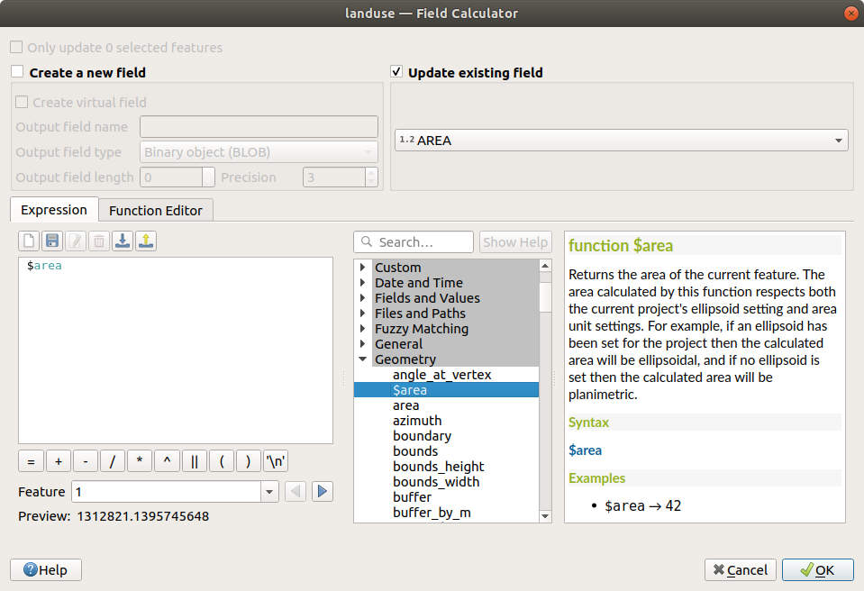
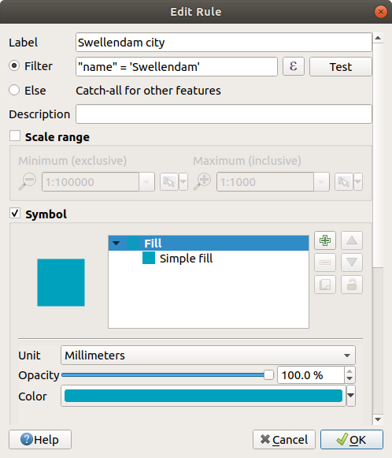
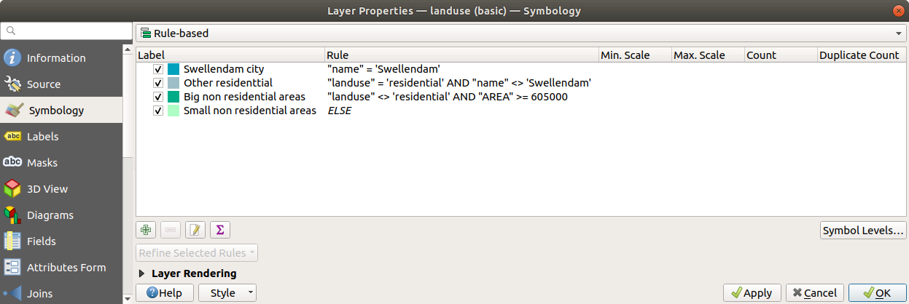

Labels are a good way to communicate information such as the names of
individual places, but they can’t be used for everything.
For example, let us say that someone wants to know what each
landuse area is used for.
Using labels, you would get this:
This makes the map’s labeling difficult to read and even overwhelming
if there are numerous different landuse areas on the map.
The goal for this lesson: To learn how to classify vector data
effectively.
Open the Layer Properties dialog for the landuse
layer
Go to the Symbology tab
Click on the dropdown that says Single Symbol and
change it to Categorized:
In the new panel, change the Value to landuse and
the Color ramp to Random colors
Click the button labeled Classify
Click OK
You’ll see something like this:
Click the arrow (or plus sign) next to landuse in the
Layers panel, you’ll see the categories explained:
Now our landuse polygons are colored and are classified so that
areas with the same land use are the same color.
If you wish to, you can change the symbol of each landuse
area by double-clicking the relevant color block in the
Layers panel or in the Layer Properties
dialog:
Notice that there is one category that’s empty:
This empty category is used to color any objects which do not have a
landuse value defined or which have a NULL value.
It can be useful to keep this empty category so that areas with a
NULL value are still represented on the map.
You may like to change the color to more obviously represent a blank
or NULL value.
Remember to save your map now so that you don’t lose all your
hard-earned changes!
There are four types of classification: nominal, ordinal,
interval and ratio.
In nominal classification, the categories that objects are
classified into are name-based; they have no order.
For example: town names, district codes, etc.
Symbols that are used for nominal data should not imply any order or
magnitude.
For points, we can use symbols of different shape.
For polygons, we can use different types of hatching or different
colours (avoid mixing light and dark colours).
For lines, we can use different dash patterns, different colours
(avoid mixing light and dark colours) and different symbols along
the lines.
In ordinal classification, the categories are arranged in a
certain order.
For example, world cities are given a rank depending on their
importance for world trade, travel, culture, etc.
Symbols that are used for ordinal data should imply order, but not
magnitude.
For points, we can use symbols with light to dark colours.
For polygons, we can use graduated colours (light to dark).
For lines, we can use graduated colours (light to dark).
In interval classification, the numbers are on a scale with
positive, negative and zero values.
For example: height above/below sea level, temperature in degrees
Celsius.
Symbols that are used for interval data should imply order and
magnitude.
For points, we can use symbols with varying size (small to big).
For polygons, we can use graduated colours (light to dark) or
add diagrams of varying size.
For lines, we can use thickness (thin to thick).
In ratio classification, the numbers are on a scale with only
positive and zero values.
For example: temperature above absolute zero (0 degrees Kelvin),
distance from a point, the average amount of traffic on a given
street per month, etc.
Symbols that are used for ratio data should imply order and
magnitude.
For points, we can use symbols with varying size (small to big).
For polygons, we can use graduated colours (light to dark) or
add diagrams of varying size.
For lines, we can use thickness (thin to thick).
In the example above, we used nominal classification to color each
record in the landuse layer based on its landuse attribute.
Now we will use ratio classification to classify the records by area.
We are going to reclassify the layer, so existing classes will be lost
if not saved. To store the current classification:
Open the layer’s properties dialog
Click the Save Style … button in the Style
drop-down menu.
Select Rename Current…, enter landusage and press
OK.
The categories and their symbols are now saved in the layer’s properties.
Click now on the Add… entry of the Style
drop-down menu and create a new style named ratio.
This will store the new classification.
Close the Layer Properties dialog
We want to classify the landuse areas by size, but there is a
problem: they don’t have a size field, so we’ll have to make one.
Open the Attributes Table for the landuse layer.
Enter edit mode by clicking the Toggle editing
button
Add a new column of decimal type, called AREA, using the
New field button:

Click OK
The new field will be added (at the far right of the table; you may
need to scroll horizontally to see it).
However, at the moment it is not populated, it just has a lot of
NULL values.
To solve this problem, we will need to calculate the areas.
Open the field calculator with the button.
You will get this dialog:
Check the Update existing fields
Select AREA in the fields drop-down menu

Under the Expression tab, expand the Geometry
functions group in the list and find $area
Double-click on it so that it appears in the Expression
field

Click OK
Scroll to the AREA field in the attribute table and you will
notice that it is populated with values (you may need to
click the column header to refresh the data).
Note
These areas respect the project’s area unit settings, so
they may be in square meters or square degrees.
Press to save the edits and exit the edit mode with
Toggle editing
Close the attribute table
Now that we have the data, let’s use them to render the landuse layer.
Open the Layer properties dialog’s
Symbology tab for the landuse layer
Change the classification style from Categorized to
Graduated
Change the Value to AREA
Under Color ramp, choose the option
Create New Color Ramp…:
Choose Gradient (if it’s not selected already) and click
OK. You will see this:
You’ll be using this to denote area, with small areas as
Color 1 and large areas as Color 2.
Choose appropriate colors
In the example, the result looks like this:
Click OK
You can save the colour ramp by selecting
Save Color Ramp… under the Color ramp
tab.
Choose an appropriate name for the colour ramp and click
Save.
You will now be able to select the same colour ramp easily under
All Color Ramps.
Under Mode choose Equal Count (Quantile) .
Click Classify
Now you will have something like this:
Leave everything else as-is.
Click OK:
3.3.4. ★★☆ Try Yourself: Refine the Classification
Change the values of Mode and Classes until
you get a classification that makes sense.
Answer
The settings you used might not be the same, but with the values
Classes = 6 and Mode = Natural Breaks
(Jenks) (and using the same colors, of course), the map will look like this:
It’s often useful to combine multiple criteria for a classification,
but unfortunately normal classification only takes one attribute into account.
That’s where rule-based classification comes in handy.
In this lesson, we will represent the landuse layer in a way to
easily identify Swellendam city from the other residential area,
and from the other types of landuse (based on their area).
Open the Layer Properties dialog for the landuse
layer
Switch to the Symbology tab
Switch the classification style to Rule-based
QGIS will automatically show the rules that represent the current
classification implemented for this layer.
For example, after completing the exercise above, you may see
something like this:
Click and drag to select all the rules
Use the Remove selected rules button to remove
all of the existing rules
Let’s now add our custom rules.
Click the Add rule button
The Edit rule dialog then appears
Enter Swellendamcity as Label
Click the button next to the Filter text
area to open the Expression String Builder
Enter the criterion "name"='Swellendam' and validate
Back to the Edit rule dialog, assign it a darker
grey-blue color in order to indicate the town’s
importance in the region and remove the border

Press OK
Repeat the steps above to add the following rules:
Other residential label with the criterion
"landuse"='residential'AND"name"<>'Swellendam'.
Choose a pale blue-grey Fill color
Big non residential areas label with the criterion
"landuse"<>'residential'AND"AREA">=605000.
Choose a mid-green color.
These filters are exclusive, in that they exclude areas on the
map (non-residential areas which are smaller than 605000
(square meters) are not included in any of the rules).
We will catch the remaining features using a new rule labeled
Small non residential areas. Instead of a filter expression,
Check the Else.
Give this category a suitable pale green color.
Your rules should now look like this:

Apply this symbology
Your map will look something like this:
Now you have a map with Swellendam the most prominent
residential area and other non-residential areas colored according to
their size.
Symbology allows us to represent the attributes of a layer in an
easy-to-read way.
It allows us as well as the map reader to understand the significance
of features, using any relevant attributes that we choose.
Depending on the problems you face, you’ll apply different
classification techniques to solve them.
Now we have a nice-looking map, but how are we going to get it out of
QGIS and into a format we can print out, or make into an image or PDF? That’s the topic of the next lesson!


 Toggle editing
button
Toggle editing
button New field button:
New field button: button.
button.
 Update existing fields
Update existing fields to save the edits and exit the edit mode with
to save the edits and exit the edit mode with


 Equal Count (Quantile) .
Equal Count (Quantile) .


 Remove selected rules button to remove
all of the existing rules
Remove selected rules button to remove
all of the existing rules Add rule button
Add rule button button next to the Filter text
area to open the Expression String Builder
button next to the Filter text
area to open the Expression String Builder

 Else.
Give this category a suitable pale green color.
Else.
Give this category a suitable pale green color.